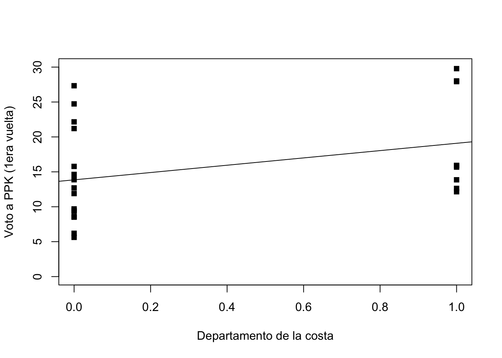
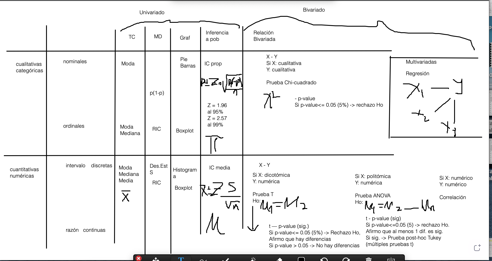
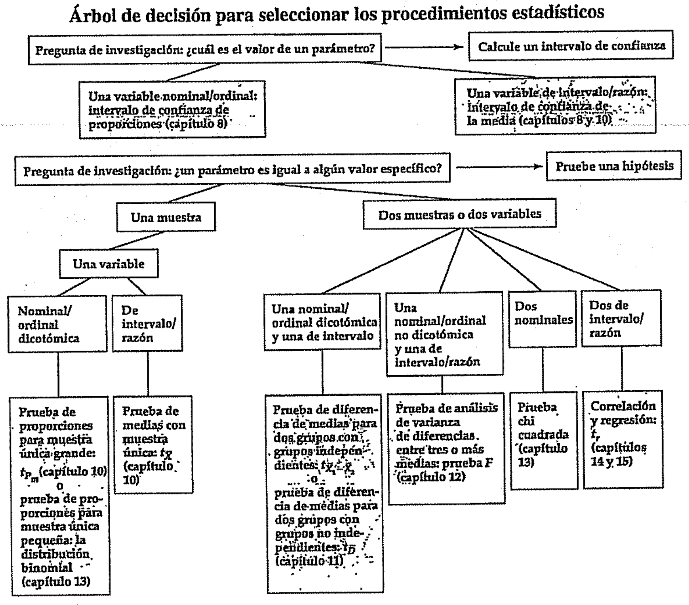

Análisis de regresión como método unificado
Hasta el momento se ha usado el método de regresión lineal para
analizar la relación entre dos variables numéricas, tanto la dependiente
como las independientes. Este método puede ampliarse y ser usado con una
diversidad de tipos de variables independientes, tanto numéricas, como
nominales y ordinales.
De esta manera, el método de regresión lineal puede entenderse como
un método general, que incluye tanto el análisis de la prueba t como la
prueba de ANOVA, dado que ambas usan una variable numérica como variable
dependiente.
En resumen, la única condición del análisis de regresión es que la
variable dependiente sea numérica, pero las variables independientes
pueden ser de diverso tipo.
Regresión lineal como prueba t de diferencia de medias
La prueba t de diferencia de medias se usaba cuando queríamos hacer
una inferencia acerca de las medias entre dos grupos. Es decir, para
comparar la medida de tendencia central (la media) de una variable
dependiente entre (dos) grupos de una variable independiente, que podría
ser nominal u ordinal.
Siguiendo con los datos de la elección presidencial de 2016, cargamos
la base de datos que hemos estado usando.
library(rio)
data <- import("bases/datos2016_v3.sav")
Entonces, si queremos saber si existen diferencias estadísticas de la
votación a Keiko Fujimori entre los departamentos de la costa y los
departamentos que no están en la costa, se puede usar la prueba t de
diferencia de medias. Es decir, se quiere comparar la media de votación
a Fujimori, una variable cuantitativas, entre grupos de la variable
“costa”, variable dicotómica.
Lo primero es ver las medias de cada grupo.
mean(data$Voto_PPK_2016_1[data$costa==0], na.rm=T)
## [1] 13.85437
mean(data$Voto_PPK_2016_1[data$costa==1], na.rm=T)
## [1] 19.09556
Para analizar si la diferencia entre 19.1 y 13.9 es significativa, se
puede correr una prueba t de diferencias de medias.
library(DescTools)
##
## Attaching package: 'DescTools'
## The following object is masked from 'package:jtools':
##
## %nin%
LeveneTest(data$Voto_PPK_2016_1, data$costa)
## Warning in LeveneTest.default(data$Voto_PPK_2016_1, data$costa): data$costa
## coerced to factor.
## Levene's Test for Homogeneity of Variance (center = median)
## Df F value Pr(>F)
## group 1 9e-04 0.9762
## 23
Luego del test de igualdad de varianzas, se puede correr la prueba
t.
t.test(Voto_KF_2016_1 ~ sierra, data=data, var.equal=T)
##
## Two Sample t-test
##
## data: Voto_KF_2016_1 by sierra
## t = 3.0447, df = 23, p-value = 0.005752
## alternative hypothesis: true difference in means between group 0 and group 1 is not equal to 0
## 95 percent confidence interval:
## 3.943125 20.656875
## sample estimates:
## mean in group 0 mean in group 1
## 43.62 31.32
De estos resultados, vemos que se obtiene un p-value de 0.08, que es
menor a 0.1. Es decir, la diferencia en el voto a PPK entre
departamentos de la costa y los que no son de la costa sería
significativa a 0.10.
Para graficar la relación entre ambas variables antes se ha usado un
boxplot, que no muestra datos para la inferencia, solo datos
descriptivos. También se ha usado un gráfico de barras de error para
mostrar las medias de cada grupo con el respectivo intervalo de
confianza.
En esta sección, se produce un gráfico de dispersión entre la
variable “costa” y “voto a PPK”. Debido a que la variable “costa” es
dicotómica, solo tiene valores 0 y 1, por lo que los puntos, que
representan a cada departamento, se agrupan en dos líneas
verticales.
plot(data$costa, data$Voto_PPK_2016_1,
xlab="Departamento de la costa",
ylab="Voto a PPK (1era vuelta)",
pch=15, ylim=c(0, 30))
abline(lm(data$Voto_PPK_2016_1 ~ data$costa))

En este gráfico también se puede pensar en una mejor recta de
predicción, que reduce la distancia de los puntos a la recta. Esta recta
atraviesa por la media de cada grupo.
Por lo tanto, un modelo de regresión que use el voto a PPK en primera
vuelta en 2016 como variable dependiente y la variable dicotómica
“costa” como variable independiente nos daría los datos para la
construcción de esta recta de aproximación.
modelo1 <- lm(data$Voto_KF_2016_1 ~ data$sierra)
summary(modelo1)
##
## Call:
## lm(formula = data$Voto_KF_2016_1 ~ data$sierra)
##
## Residuals:
## Min 1Q Median 3Q Max
## -22.58 -4.65 0.72 5.81 20.90
##
## Coefficients:
## Estimate Std. Error t value Pr(>|t|)
## (Intercept) 43.620 2.555 17.073 1.48e-14 ***
## data$sierra -12.300 4.040 -3.045 0.00575 **
## ---
## Signif. codes: 0 '***' 0.001 '**' 0.01 '*' 0.05 '.' 0.1 ' ' 1
##
## Residual standard error: 9.895 on 23 degrees of freedom
## Multiple R-squared: 0.2873, Adjusted R-squared: 0.2563
## F-statistic: 9.27 on 1 and 23 DF, p-value: 0.005752
Los resultados indican que la recta es \(\hat{Y} = 13.9 + 5.2*X\). Esta recta tiene
el valor de 13.9 cuando X=0. Es decir, para los departamentos que no son
de la costa, el promedio de voto a PPK es 13.9, tal cual encontramos de
manera descriptiva. Cuando X=1, el promedio de voto a PPK es 13.9+5.2 =
19.1, que es el promedio del voto para los departamentos de la costa, el
mismo valor que encontramos de manera descriptiva.
Es decir la recta de aproximación pasa por el promedio del voto a PPK
para los departamentos que no son de la costa y para los que sí son de
la costa.
El modelo de regresión no solo replica los datos, sino también
replica la prueba de significancia. La hipótesis nula que se evalúa aquí
es: \(\mu_{costa} - \mu_{no
costa}\).
El estadístico de la prueba t es -1.82 y un p-value de 0.08. Estos
datos también se encuentran en la línea de la variable
independiente.
Regresión lineal como ANOVA
Si quisiéremos evaluar las diferencias en el voto a Fujimori en 2016
entre las 3 regiones: costa, sierra y selva, podríamos usar el test de
ANOVA. Se tiene una variable dependiente numérica y una variable
independiente nominal con 3 categorías.
Lo primero es ver las medias del voto a Fujimori para cada grupo.
mean(data$Voto_KF_2016_1[data$region==1], na.rm=T)
## [1] 42.8
mean(data$Voto_KF_2016_1[data$region==2], na.rm=T)
## [1] 31.32
mean(data$Voto_KF_2016_1[data$region==3], na.rm=T)
## [1] 44.85
Luego, se puede evaluar si alguna de las diferencias entre estas
medias es significativa mediante ANOVA.
anova <- aov(data$Voto_KF_2016_1 ~ as.factor(data$region))
summary(anova)
## Df Sum Sq Mean Sq F value Pr(>F)
## as.factor(data$region) 2 922.9 461.4 4.538 0.0224 *
## Residuals 22 2237.0 101.7
## ---
## Signif. codes: 0 '***' 0.001 '**' 0.01 '*' 0.05 '.' 0.1 ' ' 1
TukeyHSD(anova)
## Tukey multiple comparisons of means
## 95% family-wise confidence level
##
## Fit: aov(formula = data$Voto_KF_2016_1 ~ as.factor(data$region))
##
## $`as.factor(data$region)`
## diff lwr upr p adj
## 2-1 -11.48 -23.1187400 0.15874 0.0536664
## 3-1 2.05 -11.3005504 15.40055 0.9215488
## 3-2 13.53 0.4491855 26.61081 0.0417507
Recordemos que ANOVA pone a prueba la siguiente hipótesis nula: \(\mu_{costa} = \mu_{sierra} = \mu_{selva}\).
De acuerdo al p-value de ANOVA se concluye que debe haber al menos una
diferencia significativa. Luego, mediante la prueba de Tukey vemos que
existen dos emparejamientos significativos.
Para replicar estos resultados mediante el análisis de regresión, se
tiene que crear variables dummy por cada grupo de la variable “region”.
Es decir, 3 variables: “costa”, “sierra” y “selva”, En el modelo de
regresión, sin embargo, solo se debe incluir 2 de esas variables dummy
(por qué?).
modelo2 <- lm(data$Voto_KF_2016_1 ~ data$costa + data$sierra)
summary(modelo2)
##
## Call:
## lm(formula = data$Voto_KF_2016_1 ~ data$costa + data$sierra)
##
## Residuals:
## Min 1Q Median 3Q Max
## -21.76 -5.88 -0.34 6.63 21.72
##
## Coefficients:
## Estimate Std. Error t value Pr(>|t|)
## (Intercept) 44.850 4.117 10.895 2.48e-10 ***
## data$costa -2.050 5.315 -0.386 0.7034
## data$sierra -13.530 5.207 -2.598 0.0164 *
## ---
## Signif. codes: 0 '***' 0.001 '**' 0.01 '*' 0.05 '.' 0.1 ' ' 1
##
## Residual standard error: 10.08 on 22 degrees of freedom
## Multiple R-squared: 0.2921, Adjusted R-squared: 0.2277
## F-statistic: 4.538 on 2 and 22 DF, p-value: 0.02238
Se excluye la tercera variable dummy debido a que los resultados para
este grupo se encuentran en el intercepto en el análisis de regresión.
Es decir, cuando costa=0 y sierra=0, el voto promedio a Fujimori es
44.85, mismo valor que se encontró en el análisis descriptivo. Cuando
costa=1 y sierra=0, el voto promedio a Fujimori es 44.85-2.05 = 42.8,
mismo valor que se encontró en el análisis descriptivo. Finalmente,
cuando costa=0 y sierra=1, el voto promedio a Fujimori es
44.85-13.53=31.32, mismo valor que se encontró en el análisis
descriptivo.
Vemos que los coeficientes de las 2 variables dummy son las
diferencias entre los grupos. Los valores de 2.05 y 13.53 son los mismos
que se evaluaron en el test de Tukey.
Conclusión
Hemos comenzado la explicación del análisis de regresión como una
forma para evaluar la relación entre dos variables numéricas. En esta
sección hemos expandido esta idea y hemos visto que el método de
regresión se puede usar con variables independientes de tipo categórico,
ya sea nominal u ordinal. El único requisito es que la variable
dependiente sea numérica.
De esta manera, el modelo de regresión se puede expresar
\[
\hat{Y} = \hat{\alpha} +
\hat{\beta_1}*X_1+\hat{\beta_2}*X_2+\hat{\beta_3}*X_3+...+\hat{\beta_n}*X_n
\]
Los requisitos son:
Y es una variable numérica
Xs pueden ser numéricas o categóricas.
El número de variables independientes no puede ser mayor que el
número de observaciones menos 1 (N-1).
En este curso se ha presentado el análisis de regresión lineal como
técnica para evaluar la relación bivariada y para evaluar la relación
multivariada. Con la técnica de regresión multivariada se puede
analizar:
La validez del modelo.
La relación de cada predictor con la variable
dependiente.
La dirección de la relación entre cada predictor y la variable
dependiente.
La fuerza del modelo.
La predicción del modelo para diferentes valores de los
predictores.
Hacia el próximo ciclo
El método de regresión lineal multivariado debe cumplir unos
requisitos que no se verán en este curso. Estos requisitos son:
Linealidad: que la relación entre las variables sea
lineal.
Multicolinealidad: los predictores no deben “medir” el mismo
concepto. Es decir, variables independientes no deben tener una alta
correlación.
Heterocedasticidad: los errores deben ser aleatorios y no ser
sistemáticos. Si los errores tiene una relación sistemática con los
valores de la variable dependiente, se habla de
heterocedasticidad.
Autocorrelación: en particular cuando se trabaja con una variable
temporal. Se dice que hay autocorrelación cuando el valor en t+1 depende
del valor de t.
Estos requisitos se verán en el curso de Estadística 2.
Otro tema que se verá en el siguiente curso es el modelo que se usa
cuando la variable dependiente no es una numérica, sino una variable
dicotómica. Cuando tenemos esta variable dependiente se usa un modelo de
regresión logística.
Resumen
En esta sección presentamos un mapa de temas que hemos visto a lo
largo de todo el semestre. Como se ve en el esquema, las herramientas
que hemos visto en el curso dependen de un punto de partida inicial, que
es la distinción entre tipos de variables: cualitativas o categóricas y
cuantitativas o numéricas. Dependiendo de esta categorización, se
desprende el tipo de análisis descriptivo, tanto de la tendencia
central, como de la dispersión, así como las formas de graficar estas
variables.
Como paso previo a la inferencia, se construyeron intervalos de
confianza de la media (variables cuantitavitas) o de proporciones
(variables cualitativas). Se analizó que se podían construir intervalos
de confianza de medias o proporciones para grupos. Este es el primer
paso de la inferencia. Se evaluó si los intervalos de confianza se
traslapaban o no. Esto daba paso al análisis bivariado en la segunda
parte del curso.

En el libro de Ritchey se muestra este árbol de decisión. La rama
derecha de “Dos muestras o dos variables” muestra el resumen de la
segunda parte de este curso. Esta segunda parte ha estado dedicada a la
inferencia en el análisis bivariado. Como hemos avanzado en este curso,
se ha presentado la prueba de inferencia t, la prueba F de ANOVA, la
prueba de chi-cuadrado y la regresión bivariada. Luego, se dio el paso
al análisis multivariado.

Finalmente, el objetivo de este curso es presentar herramientas
iniciales para el análisis de datos sociales. Se espera que luego de
este curso los alumnos sean consumidores o productores capaces de
estadística. Como consumidores, los alumnos van a estar expuestos a
literatura especializada que use métodos estadísticos. Las herramientas
vistas en este curso permitirían que los alumnos puedan evaluar estos
artículos y los hallazgos de manera crítica.
Como productores, se espera que los alumnos utilicen evidencia
numérica y análisis estadístico en sus trabajos de cursos y en sus tesis
de pregrado. Ya sea para presentar análisis descriptivo o para realizar
análisis inferencial, los alumnos deberían estar en la capacidad de
recoger datos numéricos y trabajar con estos usando técnicas vistas en
este curso. Es completamente válido que los alumnos usen otros métodos,
por ejemplo cualitativos, pero si este curso y el siguiente logran que
algunos de ustedes se “atrevan” a usar métodos cuantitativos, ese será
el mayor logro de este curso. Gracias!!!
LS0tCnRpdGxlOiAiQ2xhc2UgMTMiCmF1dGhvcjogIkFydHVybyBNYWxkb25hZG8iCmRhdGU6ICIyMS82LzIwMjIiCm91dHB1dDoKICBodG1sX2RvY3VtZW50OgogICAgdG9jOiB0cnVlCiAgICB0b2NfZmxvYXQ6IHRydWUKICAgIGNvbGxhcHNlZDogZmFsc2UKICAgIG51bWJlcl9zZWN0aW9uczogZmFsc2UKICAgIHRvY19kZXB0aDogMQogICAgY29kZV9kb3dubG9hZDogdHJ1ZQogICAgdGhlbWU6IGNvc21vCiAgICBoaWdobGlnaHQ6IHRleHRtYXRlCmVkaXRvcl9vcHRpb25zOgogIG1hcmtkb3duOgogICAgd3JhcDogc2VudGVuY2UKYmlibGlvZ3JhcGh5OiByZWZlcmVuY2VzLmJpYgotLS0KCmBgYHtyIHNldHVwLCBpbmNsdWRlPUZBTFNFfQprbml0cjo6b3B0c19jaHVuayRzZXQoZWNobyA9IFRSVUUpCmBgYAoKIyBBbsOhbGlzaXMgZGUgcmVncmVzacOzbiBjb21vIG3DqXRvZG8gdW5pZmljYWRvCgpIYXN0YSBlbCBtb21lbnRvIHNlIGhhIHVzYWRvIGVsIG3DqXRvZG8gZGUgcmVncmVzacOzbiBsaW5lYWwgcGFyYSBhbmFsaXphciBsYSByZWxhY2nDs24gZW50cmUgZG9zIHZhcmlhYmxlcyBudW3DqXJpY2FzLCB0YW50byBsYSBkZXBlbmRpZW50ZSBjb21vIGxhcyBpbmRlcGVuZGllbnRlcy4KRXN0ZSBtw6l0b2RvIHB1ZWRlIGFtcGxpYXJzZSB5IHNlciB1c2FkbyBjb24gdW5hIGRpdmVyc2lkYWQgZGUgdGlwb3MgZGUgdmFyaWFibGVzIGluZGVwZW5kaWVudGVzLCB0YW50byBudW3DqXJpY2FzLCBjb21vIG5vbWluYWxlcyB5IG9yZGluYWxlcy4KCkRlIGVzdGEgbWFuZXJhLCBlbCBtw6l0b2RvIGRlIHJlZ3Jlc2nDs24gbGluZWFsIHB1ZWRlIGVudGVuZGVyc2UgY29tbyB1biBtw6l0b2RvIGdlbmVyYWwsIHF1ZSBpbmNsdXllIHRhbnRvIGVsIGFuw6FsaXNpcyBkZSBsYSBwcnVlYmEgdCBjb21vIGxhIHBydWViYSBkZSBBTk9WQSwgZGFkbyBxdWUgYW1iYXMgdXNhbiB1bmEgdmFyaWFibGUgbnVtw6lyaWNhIGNvbW8gdmFyaWFibGUgZGVwZW5kaWVudGUuCgpFbiByZXN1bWVuLCBsYSDDum5pY2EgY29uZGljacOzbiBkZWwgYW7DoWxpc2lzIGRlIHJlZ3Jlc2nDs24gZXMgcXVlIGxhIHZhcmlhYmxlIGRlcGVuZGllbnRlIHNlYSBudW3DqXJpY2EsIHBlcm8gbGFzIHZhcmlhYmxlcyBpbmRlcGVuZGllbnRlcyBwdWVkZW4gc2VyIGRlIGRpdmVyc28gdGlwby4KCiMgUmVncmVzacOzbiBsaW5lYWwgY29tbyBwcnVlYmEgdCBkZSBkaWZlcmVuY2lhIGRlIG1lZGlhcwoKTGEgcHJ1ZWJhIHQgZGUgZGlmZXJlbmNpYSBkZSBtZWRpYXMgc2UgdXNhYmEgY3VhbmRvIHF1ZXLDrWFtb3MgaGFjZXIgdW5hIGluZmVyZW5jaWEgYWNlcmNhIGRlIGxhcyBtZWRpYXMgZW50cmUgZG9zIGdydXBvcy4KRXMgZGVjaXIsIHBhcmEgY29tcGFyYXIgbGEgbWVkaWRhIGRlIHRlbmRlbmNpYSBjZW50cmFsIChsYSBtZWRpYSkgZGUgdW5hIHZhcmlhYmxlIGRlcGVuZGllbnRlIGVudHJlIChkb3MpIGdydXBvcyBkZSB1bmEgdmFyaWFibGUgaW5kZXBlbmRpZW50ZSwgcXVlIHBvZHLDrWEgc2VyIG5vbWluYWwgdSBvcmRpbmFsLgoKU2lndWllbmRvIGNvbiBsb3MgZGF0b3MgZGUgbGEgZWxlY2Npw7NuIHByZXNpZGVuY2lhbCBkZSAyMDE2LCBjYXJnYW1vcyBsYSBiYXNlIGRlIGRhdG9zIHF1ZSBoZW1vcyBlc3RhZG8gdXNhbmRvLgoKYGBge3IgYmFzZX0KbGlicmFyeShyaW8pCmRhdGEgPC0gaW1wb3J0KCJiYXNlcy9kYXRvczIwMTZfdjMuc2F2IikKYGBgCgpFbnRvbmNlcywgc2kgcXVlcmVtb3Mgc2FiZXIgc2kgZXhpc3RlbiBkaWZlcmVuY2lhcyBlc3RhZMOtc3RpY2FzIGRlIGxhIHZvdGFjacOzbiBhIEtlaWtvIEZ1amltb3JpIGVudHJlIGxvcyBkZXBhcnRhbWVudG9zIGRlIGxhIGNvc3RhIHkgbG9zIGRlcGFydGFtZW50b3MgcXVlIG5vIGVzdMOhbiBlbiBsYSBjb3N0YSwgc2UgcHVlZGUgdXNhciBsYSBwcnVlYmEgdCBkZSBkaWZlcmVuY2lhIGRlIG1lZGlhcy4KRXMgZGVjaXIsIHNlIHF1aWVyZSBjb21wYXJhciBsYSBtZWRpYSBkZSB2b3RhY2nDs24gYSBGdWppbW9yaSwgdW5hIHZhcmlhYmxlIGN1YW50aXRhdGl2YXMsIGVudHJlIGdydXBvcyBkZSBsYSB2YXJpYWJsZSAiY29zdGEiLCB2YXJpYWJsZSBkaWNvdMOzbWljYS4KCkxvIHByaW1lcm8gZXMgdmVyIGxhcyBtZWRpYXMgZGUgY2FkYSBncnVwby4KCmBgYHtyIG1lZGlhc30KbWVhbihkYXRhJFZvdG9fUFBLXzIwMTZfMVtkYXRhJGNvc3RhPT0wXSwgbmEucm09VCkKbWVhbihkYXRhJFZvdG9fUFBLXzIwMTZfMVtkYXRhJGNvc3RhPT0xXSwgbmEucm09VCkKYGBgCgpQYXJhIGFuYWxpemFyIHNpIGxhIGRpZmVyZW5jaWEgZW50cmUgMTkuMSB5IDEzLjkgZXMgc2lnbmlmaWNhdGl2YSwgc2UgcHVlZGUgY29ycmVyIHVuYSBwcnVlYmEgdCBkZSBkaWZlcmVuY2lhcyBkZSBtZWRpYXMuCgpgYGB7ciBsZXZlbmV9CmxpYnJhcnkoRGVzY1Rvb2xzKQpMZXZlbmVUZXN0KGRhdGEkVm90b19QUEtfMjAxNl8xLCBkYXRhJGNvc3RhKQpgYGAKCkx1ZWdvIGRlbCB0ZXN0IGRlIGlndWFsZGFkIGRlIHZhcmlhbnphcywgc2UgcHVlZGUgY29ycmVyIGxhIHBydWViYSB0LgoKYGBge3IgcHJ1ZWJhIHR9CnQudGVzdChWb3RvX0tGXzIwMTZfMSB+IHNpZXJyYSwgZGF0YT1kYXRhLCB2YXIuZXF1YWw9VCkKYGBgCgpEZSBlc3RvcyByZXN1bHRhZG9zLCB2ZW1vcyBxdWUgc2Ugb2J0aWVuZSB1biBwLXZhbHVlIGRlIDAuMDgsIHF1ZSBlcyBtZW5vciBhIDAuMS4KRXMgZGVjaXIsIGxhIGRpZmVyZW5jaWEgZW4gZWwgdm90byBhIFBQSyBlbnRyZSBkZXBhcnRhbWVudG9zIGRlIGxhIGNvc3RhIHkgbG9zIHF1ZSBubyBzb24gZGUgbGEgY29zdGEgc2Vyw61hIHNpZ25pZmljYXRpdmEgYSAwLjEwLgoKUGFyYSBncmFmaWNhciBsYSByZWxhY2nDs24gZW50cmUgYW1iYXMgdmFyaWFibGVzIGFudGVzIHNlIGhhIHVzYWRvIHVuIGJveHBsb3QsIHF1ZSBubyBtdWVzdHJhIGRhdG9zIHBhcmEgbGEgaW5mZXJlbmNpYSwgc29sbyBkYXRvcyBkZXNjcmlwdGl2b3MuClRhbWJpw6luIHNlIGhhIHVzYWRvIHVuIGdyw6FmaWNvIGRlIGJhcnJhcyBkZSBlcnJvciBwYXJhIG1vc3RyYXIgbGFzIG1lZGlhcyBkZSBjYWRhIGdydXBvIGNvbiBlbCByZXNwZWN0aXZvIGludGVydmFsbyBkZSBjb25maWFuemEuCgpFbiBlc3RhIHNlY2Npw7NuLCBzZSBwcm9kdWNlIHVuIGdyw6FmaWNvIGRlIGRpc3BlcnNpw7NuIGVudHJlIGxhIHZhcmlhYmxlICJjb3N0YSIgeSAidm90byBhIFBQSyIuCkRlYmlkbyBhIHF1ZSBsYSB2YXJpYWJsZSAiY29zdGEiIGVzIGRpY290w7NtaWNhLCBzb2xvIHRpZW5lIHZhbG9yZXMgMCB5IDEsIHBvciBsbyBxdWUgbG9zIHB1bnRvcywgcXVlIHJlcHJlc2VudGFuIGEgY2FkYSBkZXBhcnRhbWVudG8sIHNlIGFncnVwYW4gZW4gZG9zIGzDrW5lYXMgdmVydGljYWxlcy4KCmBgYHtyIGdyYWZpY299CnBsb3QoZGF0YSRjb3N0YSwgZGF0YSRWb3RvX1BQS18yMDE2XzEsCiAgICAgeGxhYj0iRGVwYXJ0YW1lbnRvIGRlIGxhIGNvc3RhIiwKICAgICB5bGFiPSJWb3RvIGEgUFBLICgxZXJhIHZ1ZWx0YSkiLAogICAgIHBjaD0xNSwgeWxpbT1jKDAsIDMwKSkKYWJsaW5lKGxtKGRhdGEkVm90b19QUEtfMjAxNl8xIH4gZGF0YSRjb3N0YSkpCmBgYAoKRW4gZXN0ZSBncsOhZmljbyB0YW1iacOpbiBzZSBwdWVkZSBwZW5zYXIgZW4gdW5hIG1lam9yIHJlY3RhIGRlIHByZWRpY2Npw7NuLCBxdWUgcmVkdWNlIGxhIGRpc3RhbmNpYSBkZSBsb3MgcHVudG9zIGEgbGEgcmVjdGEuCkVzdGEgcmVjdGEgYXRyYXZpZXNhIHBvciBsYSBtZWRpYSBkZSBjYWRhIGdydXBvLgoKUG9yIGxvIHRhbnRvLCB1biBtb2RlbG8gZGUgcmVncmVzacOzbiBxdWUgdXNlIGVsIHZvdG8gYSBQUEsgZW4gcHJpbWVyYSB2dWVsdGEgZW4gMjAxNiBjb21vIHZhcmlhYmxlIGRlcGVuZGllbnRlIHkgbGEgdmFyaWFibGUgZGljb3TDs21pY2EgImNvc3RhIiBjb21vIHZhcmlhYmxlIGluZGVwZW5kaWVudGUgbm9zIGRhcsOtYSBsb3MgZGF0b3MgcGFyYSBsYSBjb25zdHJ1Y2Npw7NuIGRlIGVzdGEgcmVjdGEgZGUgYXByb3hpbWFjacOzbi4KCmBgYHtyIG1vZGVsbzF9Cm1vZGVsbzEgPC0gbG0oZGF0YSRWb3RvX0tGXzIwMTZfMSB+IGRhdGEkc2llcnJhKQpzdW1tYXJ5KG1vZGVsbzEpCmBgYAoKTG9zIHJlc3VsdGFkb3MgaW5kaWNhbiBxdWUgbGEgcmVjdGEgZXMgJFxoYXR7WX0gPSAxMy45ICsgNS4yKlgkLgpFc3RhIHJlY3RhIHRpZW5lIGVsIHZhbG9yIGRlIDEzLjkgY3VhbmRvIFg9MC4KRXMgZGVjaXIsIHBhcmEgbG9zIGRlcGFydGFtZW50b3MgcXVlIG5vIHNvbiBkZSBsYSBjb3N0YSwgZWwgcHJvbWVkaW8gZGUgdm90byBhIFBQSyBlcyAxMy45LCB0YWwgY3VhbCBlbmNvbnRyYW1vcyBkZSBtYW5lcmEgZGVzY3JpcHRpdmEuCkN1YW5kbyBYPTEsIGVsIHByb21lZGlvIGRlIHZvdG8gYSBQUEsgZXMgMTMuOSs1LjIgPSAxOS4xLCBxdWUgZXMgZWwgcHJvbWVkaW8gZGVsIHZvdG8gcGFyYSBsb3MgZGVwYXJ0YW1lbnRvcyBkZSBsYSBjb3N0YSwgZWwgbWlzbW8gdmFsb3IgcXVlIGVuY29udHJhbW9zIGRlIG1hbmVyYSBkZXNjcmlwdGl2YS4KCkVzIGRlY2lyIGxhIHJlY3RhIGRlIGFwcm94aW1hY2nDs24gcGFzYSBwb3IgZWwgcHJvbWVkaW8gZGVsIHZvdG8gYSBQUEsgcGFyYSBsb3MgZGVwYXJ0YW1lbnRvcyBxdWUgbm8gc29uIGRlIGxhIGNvc3RhIHkgcGFyYSBsb3MgcXVlIHPDrSBzb24gZGUgbGEgY29zdGEuCgpFbCBtb2RlbG8gZGUgcmVncmVzacOzbiBubyBzb2xvIHJlcGxpY2EgbG9zIGRhdG9zLCBzaW5vIHRhbWJpw6luIHJlcGxpY2EgbGEgcHJ1ZWJhIGRlIHNpZ25pZmljYW5jaWEuCkxhIGhpcMOzdGVzaXMgbnVsYSBxdWUgc2UgZXZhbMO6YSBhcXXDrSBlczogJFxtdV97Y29zdGF9IC0gXG11X3tubyBjb3N0YX0kLgoKRWwgZXN0YWTDrXN0aWNvIGRlIGxhIHBydWViYSB0IGVzIC0xLjgyIHkgdW4gcC12YWx1ZSBkZSAwLjA4LgpFc3RvcyBkYXRvcyB0YW1iacOpbiBzZSBlbmN1ZW50cmFuIGVuIGxhIGzDrW5lYSBkZSBsYSB2YXJpYWJsZSBpbmRlcGVuZGllbnRlLgoKIyBSZWdyZXNpw7NuIGxpbmVhbCBjb21vIEFOT1ZBCgpTaSBxdWlzacOpcmVtb3MgZXZhbHVhciBsYXMgZGlmZXJlbmNpYXMgZW4gZWwgdm90byBhIEZ1amltb3JpIGVuIDIwMTYgZW50cmUgbGFzIDMgcmVnaW9uZXM6IGNvc3RhLCBzaWVycmEgeSBzZWx2YSwgcG9kcsOtYW1vcyB1c2FyIGVsIHRlc3QgZGUgQU5PVkEuClNlIHRpZW5lIHVuYSB2YXJpYWJsZSBkZXBlbmRpZW50ZSBudW3DqXJpY2EgeSB1bmEgdmFyaWFibGUgaW5kZXBlbmRpZW50ZSBub21pbmFsIGNvbiAzIGNhdGVnb3LDrWFzLgoKTG8gcHJpbWVybyBlcyB2ZXIgbGFzIG1lZGlhcyBkZWwgdm90byBhIEZ1amltb3JpIHBhcmEgY2FkYSBncnVwby4KCmBgYHtyIG1lZGlhczJ9Cm1lYW4oZGF0YSRWb3RvX0tGXzIwMTZfMVtkYXRhJHJlZ2lvbj09MV0sIG5hLnJtPVQpCm1lYW4oZGF0YSRWb3RvX0tGXzIwMTZfMVtkYXRhJHJlZ2lvbj09Ml0sIG5hLnJtPVQpCm1lYW4oZGF0YSRWb3RvX0tGXzIwMTZfMVtkYXRhJHJlZ2lvbj09M10sIG5hLnJtPVQpCmBgYAoKTHVlZ28sIHNlIHB1ZWRlIGV2YWx1YXIgc2kgYWxndW5hIGRlIGxhcyBkaWZlcmVuY2lhcyBlbnRyZSBlc3RhcyBtZWRpYXMgZXMgc2lnbmlmaWNhdGl2YSBtZWRpYW50ZSBBTk9WQS4KCmBgYHtyIGFub3ZhfQphbm92YSA8LSBhb3YoZGF0YSRWb3RvX0tGXzIwMTZfMSB+IGFzLmZhY3RvcihkYXRhJHJlZ2lvbikpCnN1bW1hcnkoYW5vdmEpClR1a2V5SFNEKGFub3ZhKQpgYGAKClJlY29yZGVtb3MgcXVlIEFOT1ZBIHBvbmUgYSBwcnVlYmEgbGEgc2lndWllbnRlIGhpcMOzdGVzaXMgbnVsYTogJFxtdV97Y29zdGF9ID0gXG11X3tzaWVycmF9ID0gXG11X3tzZWx2YX0kLgpEZSBhY3VlcmRvIGFsIHAtdmFsdWUgZGUgQU5PVkEgc2UgY29uY2x1eWUgcXVlIGRlYmUgaGFiZXIgYWwgbWVub3MgdW5hIGRpZmVyZW5jaWEgc2lnbmlmaWNhdGl2YS4KTHVlZ28sIG1lZGlhbnRlIGxhIHBydWViYSBkZSBUdWtleSB2ZW1vcyBxdWUgZXhpc3RlbiBkb3MgZW1wYXJlamFtaWVudG9zIHNpZ25pZmljYXRpdm9zLgoKUGFyYSByZXBsaWNhciBlc3RvcyByZXN1bHRhZG9zIG1lZGlhbnRlIGVsIGFuw6FsaXNpcyBkZSByZWdyZXNpw7NuLCBzZSB0aWVuZSBxdWUgY3JlYXIgdmFyaWFibGVzIGR1bW15IHBvciBjYWRhIGdydXBvIGRlIGxhIHZhcmlhYmxlICJyZWdpb24iLgpFcyBkZWNpciwgMyB2YXJpYWJsZXM6ICJjb3N0YSIsICJzaWVycmEiIHkgInNlbHZhIiwgRW4gZWwgbW9kZWxvIGRlIHJlZ3Jlc2nDs24sIHNpbiBlbWJhcmdvLCBzb2xvIHNlIGRlYmUgaW5jbHVpciAyIGRlIGVzYXMgdmFyaWFibGVzIGR1bW15IChwb3IgcXXDqT8pLgoKYGBge3IgbW9kZWxvIGFvdn0KbW9kZWxvMiA8LSBsbShkYXRhJFZvdG9fS0ZfMjAxNl8xIH4gIGRhdGEkY29zdGEgKyBkYXRhJHNpZXJyYSkKc3VtbWFyeShtb2RlbG8yKQpgYGAKClNlIGV4Y2x1eWUgbGEgdGVyY2VyYSB2YXJpYWJsZSBkdW1teSBkZWJpZG8gYSBxdWUgbG9zIHJlc3VsdGFkb3MgcGFyYSBlc3RlIGdydXBvIHNlIGVuY3VlbnRyYW4gZW4gZWwgaW50ZXJjZXB0byBlbiBlbCBhbsOhbGlzaXMgZGUgcmVncmVzacOzbi4KRXMgZGVjaXIsIGN1YW5kbyBjb3N0YT0wIHkgc2llcnJhPTAsIGVsIHZvdG8gcHJvbWVkaW8gYSBGdWppbW9yaSBlcyA0NC44NSwgbWlzbW8gdmFsb3IgcXVlIHNlIGVuY29udHLDsyBlbiBlbCBhbsOhbGlzaXMgZGVzY3JpcHRpdm8uCkN1YW5kbyBjb3N0YT0xIHkgc2llcnJhPTAsIGVsIHZvdG8gcHJvbWVkaW8gYSBGdWppbW9yaSBlcyA0NC44NS0yLjA1ID0gNDIuOCwgbWlzbW8gdmFsb3IgcXVlIHNlIGVuY29udHLDsyBlbiBlbCBhbsOhbGlzaXMgZGVzY3JpcHRpdm8uCkZpbmFsbWVudGUsIGN1YW5kbyBjb3N0YT0wIHkgc2llcnJhPTEsIGVsIHZvdG8gcHJvbWVkaW8gYSBGdWppbW9yaSBlcyA0NC44NS0xMy41Mz0zMS4zMiwgbWlzbW8gdmFsb3IgcXVlIHNlIGVuY29udHLDsyBlbiBlbCBhbsOhbGlzaXMgZGVzY3JpcHRpdm8uCgpWZW1vcyBxdWUgbG9zIGNvZWZpY2llbnRlcyBkZSBsYXMgMiB2YXJpYWJsZXMgZHVtbXkgc29uIGxhcyBkaWZlcmVuY2lhcyBlbnRyZSBsb3MgZ3J1cG9zLgpMb3MgdmFsb3JlcyBkZSAyLjA1IHkgMTMuNTMgc29uIGxvcyBtaXNtb3MgcXVlIHNlIGV2YWx1YXJvbiBlbiBlbCB0ZXN0IGRlIFR1a2V5LgoKIyBDb25jbHVzacOzbgoKSGVtb3MgY29tZW56YWRvIGxhIGV4cGxpY2FjacOzbiBkZWwgYW7DoWxpc2lzIGRlIHJlZ3Jlc2nDs24gY29tbyB1bmEgZm9ybWEgcGFyYSBldmFsdWFyIGxhIHJlbGFjacOzbiBlbnRyZSBkb3MgdmFyaWFibGVzIG51bcOpcmljYXMuCkVuIGVzdGEgc2VjY2nDs24gaGVtb3MgZXhwYW5kaWRvIGVzdGEgaWRlYSB5IGhlbW9zIHZpc3RvIHF1ZSBlbCBtw6l0b2RvIGRlIHJlZ3Jlc2nDs24gc2UgcHVlZGUgdXNhciBjb24gdmFyaWFibGVzIGluZGVwZW5kaWVudGVzIGRlIHRpcG8gY2F0ZWfDs3JpY28sIHlhIHNlYSBub21pbmFsIHUgb3JkaW5hbC4KRWwgw7puaWNvIHJlcXVpc2l0byBlcyBxdWUgbGEgdmFyaWFibGUgZGVwZW5kaWVudGUgc2VhIG51bcOpcmljYS4KCkRlIGVzdGEgbWFuZXJhLCBlbCBtb2RlbG8gZGUgcmVncmVzacOzbiBzZSBwdWVkZSBleHByZXNhcgoKJCQKXGhhdHtZfSA9IFxoYXR7XGFscGhhfSArIFxoYXR7XGJldGFfMX0qWF8xK1xoYXR7XGJldGFfMn0qWF8yK1xoYXR7XGJldGFfM30qWF8zKy4uLitcaGF0e1xiZXRhX259KlhfbgokJAoKTG9zIHJlcXVpc2l0b3Mgc29uOgoKLSAgIFkgZXMgdW5hIHZhcmlhYmxlIG51bcOpcmljYQoKLSAgIFhzIHB1ZWRlbiBzZXIgbnVtw6lyaWNhcyBvIGNhdGVnw7NyaWNhcy4KCi0gICBFbCBuw7ptZXJvIGRlIHZhcmlhYmxlcyBpbmRlcGVuZGllbnRlcyBubyBwdWVkZSBzZXIgbWF5b3IgcXVlIGVsIG7Dum1lcm8gZGUgb2JzZXJ2YWNpb25lcyBtZW5vcyAxIChOLTEpLgoKRW4gZXN0ZSBjdXJzbyBzZSBoYSBwcmVzZW50YWRvIGVsIGFuw6FsaXNpcyBkZSByZWdyZXNpw7NuIGxpbmVhbCBjb21vIHTDqWNuaWNhIHBhcmEgZXZhbHVhciBsYSByZWxhY2nDs24gYml2YXJpYWRhIHkgcGFyYSBldmFsdWFyIGxhIHJlbGFjacOzbiBtdWx0aXZhcmlhZGEuCkNvbiBsYSB0w6ljbmljYSBkZSByZWdyZXNpw7NuIG11bHRpdmFyaWFkYSBzZSBwdWVkZSBhbmFsaXphcjoKCi0gICBMYSB2YWxpZGV6IGRlbCBtb2RlbG8uCgotICAgTGEgcmVsYWNpw7NuIGRlIGNhZGEgcHJlZGljdG9yIGNvbiBsYSB2YXJpYWJsZSBkZXBlbmRpZW50ZS4KCi0gICBMYSBkaXJlY2Npw7NuIGRlIGxhIHJlbGFjacOzbiBlbnRyZSBjYWRhIHByZWRpY3RvciB5IGxhIHZhcmlhYmxlIGRlcGVuZGllbnRlLgoKLSAgIExhIGZ1ZXJ6YSBkZWwgbW9kZWxvLgoKLSAgIExhIHByZWRpY2Npw7NuIGRlbCBtb2RlbG8gcGFyYSBkaWZlcmVudGVzIHZhbG9yZXMgZGUgbG9zIHByZWRpY3RvcmVzLgoKIyBIYWNpYSBlbCBwcsOzeGltbyBjaWNsb1teMV0KClteMV06IFNpIGFwcnVlYmFuCgpFbCBtw6l0b2RvIGRlIHJlZ3Jlc2nDs24gbGluZWFsIG11bHRpdmFyaWFkbyBkZWJlIGN1bXBsaXIgdW5vcyByZXF1aXNpdG9zIHF1ZSBubyBzZSB2ZXLDoW4gZW4gZXN0ZSBjdXJzby4KRXN0b3MgcmVxdWlzaXRvcyBzb246CgotICAgTGluZWFsaWRhZDogcXVlIGxhIHJlbGFjacOzbiBlbnRyZSBsYXMgdmFyaWFibGVzIHNlYSBsaW5lYWwuCgotICAgTXVsdGljb2xpbmVhbGlkYWQ6IGxvcyBwcmVkaWN0b3JlcyBubyBkZWJlbiAibWVkaXIiIGVsIG1pc21vIGNvbmNlcHRvLgogICAgRXMgZGVjaXIsIHZhcmlhYmxlcyBpbmRlcGVuZGllbnRlcyBubyBkZWJlbiB0ZW5lciB1bmEgYWx0YSBjb3JyZWxhY2nDs24uCgotICAgSGV0ZXJvY2VkYXN0aWNpZGFkOiBsb3MgZXJyb3JlcyBkZWJlbiBzZXIgYWxlYXRvcmlvcyB5IG5vIHNlciBzaXN0ZW3DoXRpY29zLgogICAgU2kgbG9zIGVycm9yZXMgdGllbmUgdW5hIHJlbGFjacOzbiBzaXN0ZW3DoXRpY2EgY29uIGxvcyB2YWxvcmVzIGRlIGxhIHZhcmlhYmxlIGRlcGVuZGllbnRlLCBzZSBoYWJsYSBkZSBoZXRlcm9jZWRhc3RpY2lkYWQuCgotICAgQXV0b2NvcnJlbGFjacOzbjogZW4gcGFydGljdWxhciBjdWFuZG8gc2UgdHJhYmFqYSBjb24gdW5hIHZhcmlhYmxlIHRlbXBvcmFsLgogICAgU2UgZGljZSBxdWUgaGF5IGF1dG9jb3JyZWxhY2nDs24gY3VhbmRvIGVsIHZhbG9yIGVuIHQrMSBkZXBlbmRlIGRlbCB2YWxvciBkZSB0LgoKRXN0b3MgcmVxdWlzaXRvcyBzZSB2ZXLDoW4gZW4gZWwgY3Vyc28gZGUgRXN0YWTDrXN0aWNhIDIuCgpPdHJvIHRlbWEgcXVlIHNlIHZlcsOhIGVuIGVsIHNpZ3VpZW50ZSBjdXJzbyBlcyBlbCBtb2RlbG8gcXVlIHNlIHVzYSBjdWFuZG8gbGEgdmFyaWFibGUgZGVwZW5kaWVudGUgbm8gZXMgdW5hIG51bcOpcmljYSwgc2lubyB1bmEgdmFyaWFibGUgZGljb3TDs21pY2EuCkN1YW5kbyB0ZW5lbW9zIGVzdGEgdmFyaWFibGUgZGVwZW5kaWVudGUgc2UgdXNhIHVuIG1vZGVsbyBkZSByZWdyZXNpw7NuIGxvZ8Otc3RpY2EuCgojIFJlc3VtZW4KCkVuIGVzdGEgc2VjY2nDs24gcHJlc2VudGFtb3MgdW4gbWFwYSBkZSB0ZW1hcyBxdWUgaGVtb3MgdmlzdG8gYSBsbyBsYXJnbyBkZSB0b2RvIGVsIHNlbWVzdHJlLgpDb21vIHNlIHZlIGVuIGVsIGVzcXVlbWEsIGxhcyBoZXJyYW1pZW50YXMgcXVlIGhlbW9zIHZpc3RvIGVuIGVsIGN1cnNvIGRlcGVuZGVuIGRlIHVuIHB1bnRvIGRlIHBhcnRpZGEgaW5pY2lhbCwgcXVlIGVzIGxhIGRpc3RpbmNpw7NuIGVudHJlIHRpcG9zIGRlIHZhcmlhYmxlczogY3VhbGl0YXRpdmFzIG8gY2F0ZWfDs3JpY2FzIHkgY3VhbnRpdGF0aXZhcyBvIG51bcOpcmljYXMuCkRlcGVuZGllbmRvIGRlIGVzdGEgY2F0ZWdvcml6YWNpw7NuLCBzZSBkZXNwcmVuZGUgZWwgdGlwbyBkZSBhbsOhbGlzaXMgZGVzY3JpcHRpdm8sIHRhbnRvIGRlIGxhIHRlbmRlbmNpYSBjZW50cmFsLCBjb21vIGRlIGxhIGRpc3BlcnNpw7NuLCBhc8OtIGNvbW8gbGFzIGZvcm1hcyBkZSBncmFmaWNhciBlc3RhcyB2YXJpYWJsZXMuCgpDb21vIHBhc28gcHJldmlvIGEgbGEgaW5mZXJlbmNpYSwgc2UgY29uc3RydXllcm9uIGludGVydmFsb3MgZGUgY29uZmlhbnphIGRlIGxhIG1lZGlhICh2YXJpYWJsZXMgY3VhbnRpdGF2aXRhcykgbyBkZSBwcm9wb3JjaW9uZXMgKHZhcmlhYmxlcyBjdWFsaXRhdGl2YXMpLgpTZSBhbmFsaXrDsyBxdWUgc2UgcG9kw61hbiBjb25zdHJ1aXIgaW50ZXJ2YWxvcyBkZSBjb25maWFuemEgZGUgbWVkaWFzIG8gcHJvcG9yY2lvbmVzIHBhcmEgZ3J1cG9zLgpFc3RlIGVzIGVsIHByaW1lciBwYXNvIGRlIGxhIGluZmVyZW5jaWEuClNlIGV2YWx1w7Mgc2kgbG9zIGludGVydmFsb3MgZGUgY29uZmlhbnphIHNlIHRyYXNsYXBhYmFuIG8gbm8uCkVzdG8gZGFiYSBwYXNvIGFsIGFuw6FsaXNpcyBiaXZhcmlhZG8gZW4gbGEgc2VndW5kYSBwYXJ0ZSBkZWwgY3Vyc28uCgohW10oUmVzdW1lbi5wbmcpCgpFbiBlbCBsaWJybyBkZSBSaXRjaGV5IHNlIG11ZXN0cmEgZXN0ZSDDoXJib2wgZGUgZGVjaXNpw7NuLgpMYSByYW1hIGRlcmVjaGEgZGUgIkRvcyBtdWVzdHJhcyBvIGRvcyB2YXJpYWJsZXMiIG11ZXN0cmEgZWwgcmVzdW1lbiBkZSBsYSBzZWd1bmRhIHBhcnRlIGRlIGVzdGUgY3Vyc28uCkVzdGEgc2VndW5kYSBwYXJ0ZSBoYSBlc3RhZG8gZGVkaWNhZGEgYSBsYSBpbmZlcmVuY2lhIGVuIGVsIGFuw6FsaXNpcyBiaXZhcmlhZG8uCkNvbW8gaGVtb3MgYXZhbnphZG8gZW4gZXN0ZSBjdXJzbywgc2UgaGEgcHJlc2VudGFkbyBsYSBwcnVlYmEgZGUgaW5mZXJlbmNpYSB0LCBsYSBwcnVlYmEgRiBkZSBBTk9WQSwgbGEgcHJ1ZWJhIGRlIGNoaS1jdWFkcmFkbyB5IGxhIHJlZ3Jlc2nDs24gYml2YXJpYWRhLgpMdWVnbywgc2UgZGlvIGVsIHBhc28gYWwgYW7DoWxpc2lzIG11bHRpdmFyaWFkby4KCiFbXShhcmJvbC5wbmcpCgpGaW5hbG1lbnRlLCBlbCBvYmpldGl2byBkZSBlc3RlIGN1cnNvIGVzIHByZXNlbnRhciBoZXJyYW1pZW50YXMgaW5pY2lhbGVzIHBhcmEgZWwgYW7DoWxpc2lzIGRlIGRhdG9zIHNvY2lhbGVzLgpTZSBlc3BlcmEgcXVlIGx1ZWdvIGRlIGVzdGUgY3Vyc28gbG9zIGFsdW1ub3Mgc2VhbiBjb25zdW1pZG9yZXMgbyBwcm9kdWN0b3JlcyBjYXBhY2VzIGRlIGVzdGFkw61zdGljYS4KQ29tbyBjb25zdW1pZG9yZXMsIGxvcyBhbHVtbm9zIHZhbiBhIGVzdGFyIGV4cHVlc3RvcyBhIGxpdGVyYXR1cmEgZXNwZWNpYWxpemFkYSBxdWUgdXNlIG3DqXRvZG9zIGVzdGFkw61zdGljb3MuCkxhcyBoZXJyYW1pZW50YXMgdmlzdGFzIGVuIGVzdGUgY3Vyc28gcGVybWl0aXLDrWFuIHF1ZSBsb3MgYWx1bW5vcyBwdWVkYW4gZXZhbHVhciBlc3RvcyBhcnTDrWN1bG9zIHkgbG9zIGhhbGxhemdvcyBkZSBtYW5lcmEgY3LDrXRpY2EuCgpDb21vIHByb2R1Y3RvcmVzLCBzZSBlc3BlcmEgcXVlIGxvcyBhbHVtbm9zIHV0aWxpY2VuIGV2aWRlbmNpYSBudW3DqXJpY2EgeSBhbsOhbGlzaXMgZXN0YWTDrXN0aWNvIGVuIHN1cyB0cmFiYWpvcyBkZSBjdXJzb3MgeSBlbiBzdXMgdGVzaXMgZGUgcHJlZ3JhZG8uCllhIHNlYSBwYXJhIHByZXNlbnRhciBhbsOhbGlzaXMgZGVzY3JpcHRpdm8gbyBwYXJhIHJlYWxpemFyIGFuw6FsaXNpcyBpbmZlcmVuY2lhbCwgbG9zIGFsdW1ub3MgZGViZXLDrWFuIGVzdGFyIGVuIGxhIGNhcGFjaWRhZCBkZSByZWNvZ2VyIGRhdG9zIG51bcOpcmljb3MgeSB0cmFiYWphciBjb24gZXN0b3MgdXNhbmRvIHTDqWNuaWNhcyB2aXN0YXMgZW4gZXN0ZSBjdXJzby4KRXMgY29tcGxldGFtZW50ZSB2w6FsaWRvIHF1ZSBsb3MgYWx1bW5vcyB1c2VuIG90cm9zIG3DqXRvZG9zLCBwb3IgZWplbXBsbyBjdWFsaXRhdGl2b3MsIHBlcm8gc2kgZXN0ZSBjdXJzbyB5IGVsIHNpZ3VpZW50ZSBsb2dyYW4gcXVlIGFsZ3Vub3MgZGUgdXN0ZWRlcyBzZSAiYXRyZXZhbiIgYSB1c2FyIG3DqXRvZG9zIGN1YW50aXRhdGl2b3MsIGVzZSBzZXLDoSBlbCBtYXlvciBsb2dybyBkZSBlc3RlIGN1cnNvLgpHcmFjaWFzISEhCg==